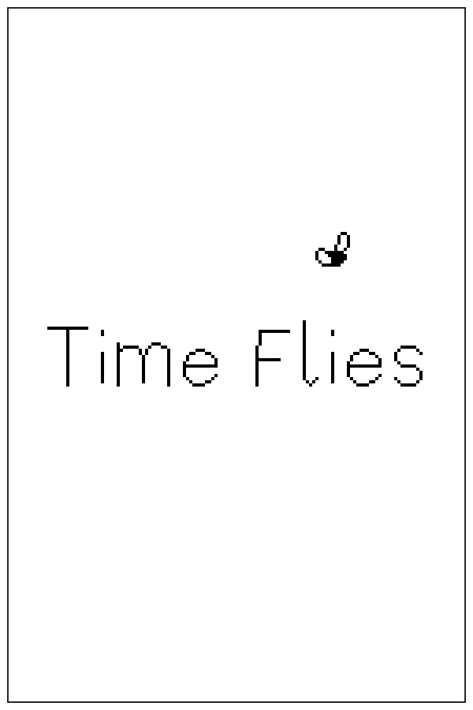

Time Flies
Every archived year-end list appearance, including placement and points earned.
About the Game
In Time Flies, you’re a fly - your life is short and your bucket list is long! Learn an instrument, read a book, become rich, get drunk, or make someone smile. And if you don’t feel like pursuing your goals, you can just relax, clean your wings, and listen to music. Make the best of the time you have left, because we’re all going to die. Features:Explore a painstakingly hand-drawn, densely detailed world Dozens of unique and obscure goals to accomplish Numerous intriguing ways to die Grimly variable life expectancy based on player location Delightfully accurate fly physics The most expansive game yet from the mind behind KIDS and Plug & Play
| Released | 2025-07-31 |
|---|---|
| Developer | Playables |
| Publisher | Panic |
| Genres | Adventure, Indie |
| Platforms | macOS, PC |
SingleplayerSteam AchievementsFull controller supportSteam CloudOpen World2DSurvivalPixel GraphicsPhysicsHand-drawnFamily SharingFlight
Where to Buy
Game information provided by RAWG.
Points by Year
List History
| Year | Source | List | Placement | Points |
|---|---|---|---|---|
| 2025 | Forbes | The 20 Best Games Of 2025 | 9 | 5 |
| 2025 | Inverse | The 25 Best Games Of 2025, Ranked | 17 | 3 |